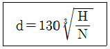
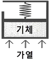
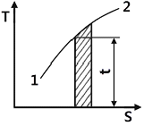
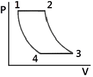
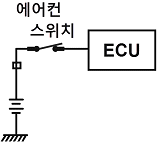
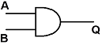
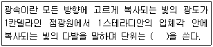

자동차정비기사 (2016-08-21 기출문제)
1과목: 일반기계공학
1. 알루미늄 분말과 산화철 분말을 사용하여 3000℃의 고온으로 용접하는 방법은?
- TIG 용접
- MIG 용접
- 테르밋 용접
- 서브머지드 아크 용접
(정답률: 76%)

2. 두께가 6㎜인 연강판에 지름 20㎜의 구멍을 펀칭할 때, 전단에 소요되는 힘은 약 몇 kN인가? (단, 연강판의 전단저항은 250MPa이다.)
- 31
- 47
- 62
- 94
(정답률: 19%)
3. 아크용접에서 용접 중에 슬래그 및 금속입자가 비산되어 용접부 주위에 부착된 것을 무엇이라 하는가?
- 피트
- 스패터
- 언더컷
- 오버랩
(정답률: 67%)
4. 경화된 강 중의 잔류오스테나이트를 마텐자이트로 변태시켜 시효변형을 방지하기 위한 목적으로 하는 열처리로서 치수의 정확성을 요하는 게이지나 베어링 등을 만들 때 주로 행하는 것은?
- 심랭처리
- 오스템퍼링
- 마템퍼링
- 노멀라이징
(정답률: 70%)
5. 유압 부속 장치 중 주로 펌프 흡입측에 설치하며 오일의 불순물을 여과하기 위한 장치는?
- 체크 밸브
- 파일럿 밸브
- 개스킷
- 스트레이너
(정답률: 80%)
6. 안지름이 110㎝인 두께가 얇은 원통용기에 1.5MPa인 가스를 넣으려면 용기의 두께는 몇 ㎜ 이상이어야 하는가? (단, 원통재료의 허용인장응력은 75MPa이다.)
- 1.1
- 1.6
- 11
- 16
(정답률: 29%)
7. 압축 코일 스프링에서 흡수되는 에너지를 크게 하기 위한 방법으로 옳지 않은 것은?
- 스프링 권수를 늘린다.
- 소선의 지름을 크게 한다.
- 스프링 지수를 크게 한다.
- 전단탄성계수가 작은 소재를 사용한다.
(정답률: 48%)
8. 불변강(不變鋼)에 속하여 열팽창계수가 매우 작아 표준자 등을 제작하는데 사용하는 것은?
- 인바
- 두랄루민
- 콘스탄탄
- 로우엑스
(정답률: 81%)
9. 각속도 4 rad/s 로 4kW의 동력을 전달하는 전동축에 작용하는 토크는 약 몇 N·m인가?
- 1000
- 500
- 102
- 51
(정답률: 45%)
10. 두께 30㎜의 강판에 절삭속도 20m/min, 드릴지름 16㎜, 이송 0.2mm/rev로 구멍을 뚫을 때 절삭시간은 약 몇 분이 걸리는가?
- 0.34
- 0.44
- 0.54
- 0.82
(정답률: 37%)
11. 볼트 체결에 있어서 마찰각을 ρ, 리드각을 λ라고 할 때 나사의 효율(η)은?
- η = tanλ／tan(λ＋ρ)
- η = tan(λ－ρ)／tan(λ＋ρ)
- η = tan(λ＋ρ)／tanλ
- η = tan(λ＋ρ)／tan(λ－ρ)
(정답률: 64%)
12. 다음 중 유체에 작용하는 압력을 차원으로 옳게 나타낸 것은?
- MLT-1
- ML-1T-2
- FLT-1
- FL-1T-2
(정답률: 50%)
13. 다음 중 용적형 유압펌프에 속하지 않는 것은?
- 기어 펌프
- 베인 펌프
- 터빈 펌프
- 스크루 펌프
(정답률: 61%)
14. 목형의 제작 시 주형에서 목형을 쉽게 빼내기 위한 기울기를 주는 것을 무엇이라 하는가?
- 목형 구배
- 가인 여유
- 수축 여유
- 코어 프린트
(정답률: 72%)
15. 다음 전동장치 중 일반적으로 축간거리를 가장 크게 할 수 있는 것은?
- 벨트 전동장치
- 체인 전동장치
- 기어 전동장치
- 로프 전동장치
(정답률: 60%)
16. 길이가 L이고 단면이 b(폭)×h(높이)의 직사각형인 단순보 중앙에 집중하중 P가 작용할 때 최대 처짐량에 대해 옳게 설명한 것은?
- 하중(P)에 반비례 한다.
- 폭(b)에 정비례 한다.
- 탄성계수(E)에 정비례한다.
- 길이(L)의 3승에 정비례한다.
(정답률: 64%)
17. H(kW)의 동력을 전달하고 N(rpm)으로 회전하는 축의 초소 지름을 제안하는 바하(Bach)의 축 지름(d, ㎜) 공식은 다음과 같은데, 이 식은 축 길이 1m에 대해 비틀림 각도가 몇 도 이내여야 함을 가정하는가?

- (1/5)°
- (1/4)°
- (1/2)°
- (1/3)°
(정답률: 60%)
18. 공작기계 등의 스핀들 흔들림 검사에 가장 적합한 측정기는?
- 게이지 블록
- 마이크로미터
- 다이얼 게이지
- 버니어 캘리퍼스
(정답률: 76%)
19. 단면이 2㎝×3㎝, 길이 2m의 연강봉에 49000N의 인장하중이 작용하면 약 몇 ㎜ 늘어나는가? (단, 세로탄성계수는 2.⑤8x10⁷N/cm2이다.)
- 8
- 4.8
- 2
- 0.8
(정답률: 30%)
20. 키 및 키 홈의 공작이 쉽고, 보스가 홈과의 접촉이 자동적으로 조정되지만, 홈이 깊어서 축의 강도가 약해지는 단점이 있는 키로서 자동차 테이퍼 축등에 주로 사용되는 키는?
- 평키(flat key)
- 원추키(cone key)
- 안장키(saddle key)
- 반달키(woodruff key)
(정답률: 56%)
2과목: 기계열역학
21. 질량이 m이고 한 변의 길이가 a인 정육면체의 밀도가 p이면, 질량이 2m이고 한 변의 길이가 2a인 정육면체의 밀도는?
- p
- ½p
- ¼P
- ⅛p
(정답률: 58%)
22. 카르노 사이클로 작동되는 열기관이 600K에서 800kJ의 열을 받아 300K에서 방출한다면 일은 약 몇 kJ인가?
- 200
- 400
- 500
- 900
(정답률: 53%)
23. 일정한 정적비열 Cv와 정압비열 Cp를 가진 이상기체 1kg의 절대온도와 체적이 각각 2배로 되었을 때 엔트로피의 변화량으로 옳은 것은?
- Cv ln2
- Cp ln2
- (Cv－Cp) ln2
- (Cv＋Cp) ln2
(정답률: 36%)
24. 시스템 내의 임의의 이상기체 1kg이 채워져 있다. 이 기체의 정압비열은 1.0kJ/kg·K이고, 초기 온도가 50℃인 상태에서 323kJ의 열량을 가하여 팽창시킬 때 변경 후 체적은 변경 전 체적의 약 몇 배가 되는가? (단, 정압과정으로 팽창한다.)
- 1.5배
- 2배
- 2.5배
- 3배
(정답률: 52%)
25. 그림과 같이 선형 스프링으로 지지되는 피스톤-실린더 장치 내부에 있는 기체를 가열하여 기체의 체적이 V1에서 V2로 증가하였고, 압력은 P1에서 P2로 변화하였다. 이때 기체가 피스톤에 행한 일은? (단, 실린더 내부의 압력(P)은 실린더 내부 부피(V)와 선형관계(P=aV, a는 상수)에 있다고 본다.)

- P2V2－P1V1
- P2V2＋P1V1
- ½(P2＋P1)(V2－V1)
- ½(P2＋P1)(V2＋V1)
(정답률: 37%)
26. 질량 유량이 10kg/s인 터빈에서 수증기의 엔탈피가 800kJ/kg 감소한다면 출력은 몇 kW인가? (단, 역학적 손실, 열손실은 모두 무시한다.)
- 80
- 160
- 1600
- 8000
(정답률: 42%)
27. 다음 중 단열과정과 정적과정만으로 이루어진 사이클(cycle)은?
- Otto cycle
- Diesel cycle
- sabathe cycle
- Rankine cycle
(정답률: 53%)
28. Carnot 냉동사이클에서 응축기 온도가 50℃, 증발기 온도가 –20℃이면, 냉동기의 성능계수는 얼마인가?
- 5.26
- 3.61
- 2.65
- 1.26
(정답률: 51%)
29. 다음 중 강도성 상태량(intensive property)이 아닌 것은?
- 온도
- 압력
- 체적
- 비체적
(정답률: 63%)
30. 이상기체의 압력(P), 체적(V)의 관계식 “PVn=일정”에서 가역단열과정을 나타내는 n의 값은? (단, Cp는 정압비열, Cv는 정적비열이다.)
- ０
- １
- 정적비열에 대한 정압비열의 비(Cp／Cv)
- 무한대
(정답률: 58%)
31. 온도 150℃, 압력 0.5MPa의 이상기체 0.287kg이 정압과정에서 원래 체적의 2배로 늘어난다. 이 과정에서 가해진 열량은 약 얼마인가? (단, 공기의 기체 상수는 0.287kJ/kg·K이고, 정압 비열은 1.004kJ/kg·K이다)
- 98.8kJ
- 111.8kJ
- 121.9kJ
- 134.9kJ
(정답률: 45%)
32. 복사열을 방사하는 방사율과 면적이 같은 2개의 방열판이 있다. 각각의 온도가 A 방열판은 120℃, B 방열판은 80℃일 때 단위면적당 복사 열전달량(Qᴀ／Qʙ)의 비는?
- 1.08
- 1.22
- 1.54
- 2.42
(정답률: 36%)
33. 압력이 200kPa, 체적 0.4m3인 공기가 정압하에서 체적이 0.6m3로 팽창하였다. 이 팽창 중에 내부에너지가 100kJ 만큼 증가하였으면 팽창에 필요한 열량은?
- 40kJ
- 60kJ
- 140kJ
- 160kJ
(정답률: 59%)
34. 체적이 150m3인 방 안에 질량이 200kg이고 온도가 20℃인 공기(이상기체 상수 = 0.287kJ/kg·K)가 들어 있을 때 이 공기의 압력은 약 몇 kPa인가?
- 112
- 124
- 162
- 184
(정답률: 42%)
35. 순수한 물질로 되어 있는 밀폐계가 단열과정 중에 수행한 일의 절대값에 관련된 설명으로 옳은 것은? (단, 운동에너지와 위치에너지의 변화는 무시한다.)
- 엔탈피의 변화량과 같다.
- 내부 에너지의 변화량과 같다.
- 단열과정 중의 일은 0이 된다.
- 외부로부터 받은 열량과 같다.
(정답률: 45%)
36. 카르노 열펌프와 카르노 냉동기가 있는데, 카르노 열펌프의 고열원 온도는 카르노 냉동기의 고열원 온도와 같고, 카르노 열펌프의 저열원 온도는 카르노 냉동기의 저열원 온도와 같다. 이때 카르노 열펌프의 성적계수(COHp)와 카르노 냉동기의 성적계수(COPR) 의 관계로 옳은 것은?
- COPHp = COPR＋1
- COPHp = COPR－1.
- COPHp = 1/(COPR＋1)
- COPHp = 1/(COPR－1.)
(정답률: 34%)
37. 다음 온도-엔트로피 선도(T-S 선도)에서 과정 1-2가 가역일 때 빗금 친 부분은 무엇을 나타내는가?

- 공업일
- 절대일
- 열량
- 내부에너지
(정답률: 59%)
38. 온도가 200℃, 압력 500kPa, 비체적 0.6m3/kg의 산소가 정압하에서 비체적이 0.4m3/kg으로 되었다면, 변화 후의 온도는 약 얼마인가?
- 42℃
- 55℃
- 315℃
- 437℃
(정답률: 32%)
39. 그림에서 T1=561K, T2=1010K, T3=690K, T4=383K인 공기를 작동 유체로 하는 브레이턴 사이클의 이론 열효율은?

- 0.388
- 0.465
- 0.316
- 0.412
(정답률: 37%)
40. 2MPa 압력에서 작동하는 가역 보일러에 포화수가 들어가 포화증기가 되어서 나온다. 보일러의 물 1Kg당 가한 열량은 약 몇 kJ인가? (단, 2MPa 압력에서 포화온도는 212.4℃이고, 이 온도는 일정하다. 그리고 포화수 비엔트로피는 2.4473kJ/kg·K, 포화증기 비엔트로피는 6.3408kJ/kg·K이다.)
- 295
- 827
- 1890
- 2423
(정답률: 50%)
3과목: 자동차기관
41. 전자제어 가솔린기관의 인젝터 분사량에 영향을 주는 요소 중 컴퓨터에 의해 제어되는 것은?
- 노즐 홀의 크기에 대한 변화
- 인젝터 저항 요소
- 인젝터 서지전압
- 인젝터 분사시간
(정답률: 73%)
42. 기관의 흡배기장치에 대한 설명으로 가장 잘못 된 것은?
- 배기 배압을 방지하기 위해 비기관의 굴곡을 완만하게 한다.
- 고속에서는 흡기다기관의 길이가 길수록 체적효율이 높아진다.
- 배기다기관은 고온, 고압가스가 통과하므로 내열성이 큰 주철 등이 주로 사용된다.
- 흡입효율을 높이기 위해 운전 조건에 따라 흡기다기관의 길이나 체적을 변화시키는 가변흡기장치가 있다.
(정답률: 78%)
43. 유해 배기가스가 과도하게 배출되는 원인으로 가장 거리가 먼 것은?
- 산소 센서 불량
- 유온 센서 불량
- 냉각수온 센서 불량
- 스로틀위치 센서 불량
(정답률: 61%)
44. 디젤 노크의 방지책으로 맞는 것은?
- 착화지연기간이 긴 연료를 사용한다.
- 세탄가가 낮은 연료를 사용한다.
- 흡기온도를 낮춘다.
- 압축비를 높인다.
(정답률: 70%)
45. 기관의 냉각장치에 대한 설명으로 틀린 것은?
- 라디에이터의 요구 조건은 단위 면적당 발열량이 크고 공기저항이 적어야 한다.
- 수냉식에는 자연 순환식, 강제 순환식, 압력 순환식, 밀봉 압력식 등이 있다.
- 알루미늄제 라디에이터는 황동제보다 강성이나 내압성이 좋다.
- 벨로우즈형 수온조절기에는 왁스와 합성고무가 사용된다.
(정답률: 67%)
46. 가솔린 기관에서 기본 연료분사량을 결정하는 요소는?
- 점화시기
- 밸브 오버랩
- 흡입 공기량
- 배기가스 온도
(정답률: 74%)
47. 기관 내 윤활유의 유압이 낮아지는 원인으로 틀린 것은?
- 윤활유의 점도가 낮을 때
- 저널베어링의 오일 간극이 클 때
- 유압조절밸브의 스프링 장력이 클 때
- 오일펌프가 마멸되어 누유가 있을 때
(정답률: 58%)
48. 자동차 기관의 스플릿 피스톤 스커트부에 슬롯을 두는 이유는?
- 블로바이 가스를 저감시킨다.
- 실린더 벽에 오일을 분산시킨다.
- 공급된 연료를 고루 분산시킨다.
- 피스톤 헤드부의 높은 열이 스커트로 전도되는 것을 차단한다.
(정답률: 68%)
49. EGR율(EGR ratio)을 나타내는 공식으로 옳은 것은?
- EGR가스량／(흡입공기량＋EGR가스량)×100
- 흡입공기량／(배기가스량＋EGR가스량)×100
- EGR가스량／(배기가스량＋EGR가스량)×100
- 흡입공기량／(배기가스량－EGR가스량)×100
(정답률: 55%)
50. 디젤기관에서 연료분사의 관련된 사항에 대한 설명 중 거리가 먼 것은?
- 무화 : 연료의 입자가 작을수록 가열되는 시간이 짧다.
- 분포 : 분사노즐로부터 분사되는 연료의 분사량을 말한다.
- 분산도 : 분산된 연료가 균일하게 연소실에 분포하는 것을 말한다.
- 관통력 : 미세화된 연료가 새로운 공기와 혼합하여 연소실로 들어가는 힘을 말한다.
(정답률: 61%)
51. 전자제어 디젤엔진의 연료장치 중에서 고압이송 단계에 속하는 것은?
- 플라이밍 펌프
- 연료 필터
- 1차 연료펌프
- 커먼레일
(정답률: 65%)
52. 지르코니아 산소센서에 대한 설명 중 틀린 것은?
- 지르코니아 소자와 백금이 사용된다.
- 일정온도 이상이 되어야 전압이 발생한다.
- 이론 혼합비에서 출력전압이 900mV로 고정된다.
- 배기가스 중의 산소농도와 대기 중의 산소농도의 차이로 공연비를 검출 한다.
(정답률: 67%)
53. 인젝터의 연료 분사량을 제어하기 위한 전제조건이 아닌 것은?
- 인젝터의 노즐 홀 단면적이 동일해야 한다.
- 인젝터의 전자기적 특성이 동일해야 한다.
- 분사차압(또는 유효분사압력)이 일정해야 한다.
- 노즐 홀을 통과하는 고얍연료에는 미세공기가 포함되어야 한다.
(정답률: 71%)
54. 2행정 4실린더 기관의 실린더 지름이 59㎜, 행정이 66㎜, 회전수가 5500rpm이고, 제동평균 유효압력이 5kgf/cm2일 때 출력은?
- 약 35.3PS
- 약 44.1PS
- 약 55.4PS
- 약 64.7PS
(정답률: 50%)
55. LPI 자동차의 연료 공급장치에 대한 설명으로 틀린 것은?
- 봄베는 내압시험과 기밀시험을 통과하여야 한다.
- 연료펌프는 기체상태의 LPG를 인젝터에 압송한다.
- 연료압력조절기는 연료 배관의 압력을 일정하게 유지시키는 역할을 한다.
- 연료 배관 파손 시 봄베 내 연료의 급격한 방출을 차단하기 위해 과류방지밸브가 있다.
(정답률: 66%)
56. 2행정 사이클 기관의 장점이 아닌 것은?
- 구조가 간단하다.
- 회전력이 균일하다.
- 각 행정이 확실히 구분되어 효율이 좋다.
- 배기량이 같을 경우 4행정 사이클 기관보다 출력이 크다.
(정답률: 57%)
57. 실린더 헤드 균열 점검방법이 아닌 것은?
- 육안검사
- 자기 탐상법
- 타진법
- 자기 염색법
(정답률: 49%)
58. 기관의 유압식 밸브 리프터에 관한 내용으로 틀린 것은?
- 고장 시에는 소음을 유발한다.
- 오버헤드 캠축 밸브방식에 주로 쓰인다.
- 오일 압력을 이용하여 일정한 밸브 간극을 유지한다.
- 밸브가 열릴 때 리프터 내부의 플런저에 오일을 보충한다.
(정답률: 53%)
59. 회전력이 3250kgf·㎝이고 기관의 회전속도가 1300rpm일 때 이 기관의 출력은 약 얼마인가?
- 43.4kW
- 48.8kW
- 53.4kW
- 58.9kW
(정답률: 36%)
60. 자동차의 오일펌프 중 펌프 보디 안에 조립된 외측(피동) 로터와 내측(구동) 로터로 구성되어 있는 것은?
- 베인 펌프
- 로터리 펌프
- 플런저 펌프
- 다이어프램 펌프
(정답률: 65%)
4과목: 자동차새시
61. 수동변속기 구성 부품 중 싱크로나이저 키를 싱크로나이저 슬리브의 안쪽 면에 압착시키고, 기어의 물림에 빠지지 않게 싱크로나이저 슬리브를 고정시키는 부품은?
- 싱크로나이저 링
- 싱크로나이저 콘
- 싱크로나이저 허브
- 싱크로나이저 키 스프링
(정답률: 54%)
62. 유압식 전자제어 동력조향장치의 특성에 대한 설명 중 틀린 것은?
- 차속센서가 고장일 경우 중속 조건으로 조향력을 일정하게 유지한다.
- 자동차가 고속일수록 조향력을 가볍게 하여 운전성을 향상시킨다.
- 정차 시 조향력을 가볍게 하여 조향 성능을 향상시킨다.
- 중속 이상에서 급조향시 발생되는 순간적 조향 휠 걸림(catch up) 현상을 방지한다.
(정답률: 71%)
63. 제동 시 뒤쪽으로 가는 브레이크 유압을 제어하는 제동 안전장치가 아닌 것은?
- 로드센싱 프로포셔닝 밸브
- 프로포셔닝 밸브
- 언로더 밸브
- 리미팅 밸브
(정답률: 64%)
64. 주차브레이크는 공차상태에서 몇 도 이상의 경사면에서 정지 상태를 유지할 수 있는 능력이 있어야 하는가?
- 10도 30분
- 11도 30분
- 12도 30분
- 13도 30분
(정답률: 55%)
65. 동력조향장치(유압식)에서 조향휠을 한쪽으로 완전히 조작 시 엔진의 회전수가 500rpm 정도로 떨어지는 원인으로 가장 알맞은 것은?
- 파워 스티어링 펌프 구동 벨트 장력 이완
- 파워 스티어링 오일압력스위치 접촉 불량
- 파워 스티어링 오일의 점도 상승
- 파워 스티어링 기어의 유격 과대
(정답률: 64%)
66. 유압식 동력조향 장치의 장점이 아닌 것은?
- 기관의 출력을 높여준다.
- 작은 힘으로 조향 조작을 할 수 있다.
- 앞바퀴의 시미현상을 감소하는 효과가 있다.
- 노면 충격을 흡수하여 조향휠에 전달되는 것을 감소시킬 수 있다.
(정답률: 71%)
67. 자동차에 디스크 브레이크 종류 중 부동형 캘리퍼의 장점이 아닌 것은?
- 구조가 간단하고 중량이 가볍다.
- 오일이 누출될 수 있는 개소가 적다.
- 피스톤의 이동량을 크게 하여야 한다.
- 베이퍼록 현상이 잘 발생되지 않는다.
(정답률: 63%)
68. ABS(Anti-lock Brake System)의 사용 목적으로 틀린 것은?
- 최적의 제동거리 확보
- 제동 시 조향성 확보
- 방향 안정성 확보
- 라이닝 마모 감소
(정답률: 75%)
69. 자동차가 주행 중 받는 공기저항에 영향을 주는 요소가 아닌 것은?
- 공기밀도
- 주행 속도
- 앞면 투영면적
- 전면 유리의 두께
(정답률: 76%)
70. 전자제어 주행안정장치(VDC)의 제어 내용과 거리가 먼 것은?
- 라이닝 마모 감지 제어
- 요-모멘트 제어
- 자동감속 제어
- 제동슬립 제어
(정답률: 69%)
71. 공기식 브레이크 장치에서 언로더 밸브의 역할을 바르게 설명한 것은?
- 탱크안의 압력이 높아지면 압력조절기에서 보내는 압축공기에 의해 배기밸브를 연다.
- 공기탱크의 압력이 규정치보다 낮아지면 압축기를 가동시켜 공기를 압송하게 한다.
- 탱크압력이 높아지면 리턴 스프링의 힘으로 압축기의 흡입작용이 이루어지게 한다.
- 흡입밸브가 닫히면서 공기 압축기 작동이 정지된다.
(정답률: 60%)
72. 자동차가 고속으로 주행할 때 발생하는 앞바퀴의 진동으로 상·하로 떨리는 현상을 무엇이라 하는가?
- 완더(wander)
- 스쿼트(squat)
- 트램핑(tramping)
- 노스다운(nose down)
(정답률: 75%)
73. 전자제어 현가장치에서 차고센서의 감지방식으로 옳은 것은?
- G 센서 방식
- 가변 저항 방식
- 칼만 와류 방식
- 앤티 쉐이크 방식
(정답률: 48%)
74. 자동변속기 오일펌프 상태 및 클러치의 슬립 등의 이상 유무를 유압계로 측정하여 판정하는데 사용하는 압력은?
- 릴리프 압력
- 매뉴얼 압력
- 거버너 압력
- 라인 압력
(정답률: 57%)
75. 자동변속기 차량의 히스테리시스(hysteresis)작용에 대한 내용으로 알맞은 것은?
- 일정속도가 되면 자동으로 변속이 이루어지는 작용
- 스로틀 개도가 일정각도 이상이 되면 자동으로 변속이 이루어지는 작용
- 주행 시 변속점 경계구간에서 변속이 빈번하게 일어나지 않게 해주는 작용
- 주행속도가 일정속도 이상이 되면 자동으로 변속이 이루어지는 작용
(정답률: 70%)
76. 제 5단의 변속비 0.85, 기관의 회전 토크가 15N·m, 종감속기어의 구동피니언 잇수가 9개, 링기어 잇수가 81개이고 80km/h로 주행할 경우이 자동차의 바퀴에 전달되는 토크는 약 얼마인가? (단, 동력전달효율은 100%이다.)
- 114.75N·m
- 127.5N·m
- 158.8N·m
- 176.8N·m
(정답률: 35%)
77. 구동력 제어장치(Traction Control System)에 대한 설명 중 가장 올바른 것은?
- ABS의 보조 제어 시스템으로 제동 효과를 높이는 역할을 한다.
- 선회 시 타이어의 고착을 방지하여 코너링 포스를 유지하도록 슬립 제어한다.
- ABS와 유사한 제어로직을 가지고 출발 또는 가속 시 타이어가 슬립하는 것을 방지한다.
- 좌·우 바퀴의 노면 상태가 다를 때 브레이크 작동 시 각각 바퀴에 적당한 제동력을 준다.
(정답률: 60%)
78. 수동변속기 차량에서 변속을 할 때 마다 기어 충돌소음이 발생하는 원인으로 가장 적합한 것은?
- 싱크로나이저의 결함
- 클러치판의 과대 마모
- 2~3단 변속기어의 손상
- 포핏 스프링의 장력부족 및 볼의 마모
(정답률: 60%)
79. 종감속 및 차동장치에서 구동피니언 잇수 7, 링기어 잇수 28이고, 추진축이 2000rpm일 때 왼쪽 바퀴가 300rpm 이었다면 오른쪽 바퀴의 회전수는?
- 500rpm
- 600rpm
- 700rpm
- 800rpm
(정답률: 41%)
80. 자동차의 주행성능 곡선도에서 알 수 없는 것은?
- 여유 구동력
- 최고 주행속도
- 최소 유해 배출량
- 차속에 따른 엔진 회전수
(정답률: 65%)
5과목: 자동차전기
81. 2개의 코일 간의 상호 인덕턴스가 1.5H일 때 한 쪽 코일의 전류가 0.01초 동안에 5A에서 1A로 변화하면 다른 쪽 코일에는 얼마의 기전력이 유도되는가?
- 100V
- 200V
- 400V
- 600V
(정답률: 46%)
82. 유압계와 유압경고들에 대한 설명으로 틀린 것은?
- 시동 전 점화스위치 ON 시 경고등이 점등되어야 정상이다.
- 적정 유압이 형성 되면 유압 스위치의 접점은 ON이 된다.
- 시동 후 경고등이 점등되면 오일의 양을 점검 해 보아야 한다.
- 유압계는 기관의 윤활회로 내 유압을 측정하기 위한 계기이다.
(정답률: 52%)
83. 자동차에 사용하는 아날로그 회로시험기의 사용방법 및 특징으로 틀린 것은?
- 전류를 측정할 경우에는 시험기를 회로에 직렬 접속하여 측정한다.
- 전압을 측정할 경우에는 시험기를 회로에 병렬 접속하여 측정한다.
- 회로시험기 내의 건전지가 방전이 되면 전압 및 전류 측정이 불가능하다.
- 아날로그 회로시험기에서 로터리 스위치를 저항위치로 하면 적생봉에서 (-), 흑색봉에서 (＋)가 나온다.
(정답률: 48%)
84. 에어백 시스템에 대한 설명으로 틀린 것은?
- 안전벨트 프리텐셔너는 충돌 시 에어백보다 먼저 동작된다.
- 고장 진단을 위해 배터리를 체결한 상태에서 교환 점검을 해야 한다.
- 사고 충격이 크지 않다면 에어백은 미전개 되며 프리텐셔너만 작동할 수도 있다.
- 커넥터를 탈거 시 폭발이 일어나는 것을 방지하기 위해 단락바가 설치되어 있다.
(정답률: 79%)
85. 충전용 AC 발전기에서 출력을 조정하는 것은?
- 로터 전류
- 다이오드 극성
- 스테이터 전류
- 정류자 전류
(정답률: 36%)
86. 에어컨 스위치 회로에 대한 설명으로 옳은 것은? (단, 배터리 전압은 12V이다.)

- ECU 내는 풀업 저항이 걸려 있다.
- ECU 내는 TTL 회로 방식이다.
- 입력신호는 아날로그 회로이다.
- ECU 내는 MOS형 회로 방식이다.
(정답률: 57%)
87. 하이브리드 차량 엔진 작업 시 조치해야 할 사항이 아닌 것은?
- 안전 스위치를 분리하고 작업한다.
- 이그니션 스위치를 OFF하고 작업한다.
- 12V 보조 배터리 케이블을 분리하고 작업한다.
- 고전압 부품 취급은 안전 스위치를 분리 후 1분 안에 작업한다.
(정답률: 76%)
88. 시동전동기 스위치의 풀인 코일에 대한 설명으로 옳은 것은?
- 풀인 코일은 전기자에 전원을 공급한다.
- 풀인 코일은 시동 시 플런저를 잡아당긴다.
- 풀인 코일은 ST단자에서 감기 시작해서 차체에 접지된다.
- 풀인 코일은 시동 시 플런저의 위치를 유지시킨다.
(정답률: 61%)
89. 점화플러그에 대한 설명으로 틀린 것은?
- 고속 회전에서 전극의 소모가 심한 기관에서는 열형 점화플러그를 사용한다.
- 열발산이 좋은 점화플러그를 냉형, 열발산이 나쁜 것을 열형이라 한다.
- 점화플러그의 열발산 정도를 수치로 나타낸 것을 열가라고 한다.
- 열형 점화플러그는 저속에서도 쉽게 자기청정온도에 도달한다.
(정답률: 57%)
90. 전압이 100V일 때 600W의 전열기가 있다. 전압이 변화되어 80V가 되었을 때 전열기의 설제 전력은?
- 약 300W
- 약 384W
- 약 424W
- 약 480W
(정답률: 48%)
91. 자동차의 납산 축전지에서 발생하는 설페이션현상의 원인이 아닌 것은?
- 극판이 단락되었다.
- 전해액의 온도가 25℃이다.
- 배터리 비중이 현저히 낮아졌다.
- 방전된 상태로 장기간 방치하였다.
(정답률: 78%)
92. 차체자세제어 시스템의 요 모멘트 제어와 관련된 사항 중 틀린 것은?
- 오버스티어링 시에 제어한다.
- 언더스티어링 시에 제어한다.
- 자기진단기를 이용한 강제구동 시 제어한다.
- 요 모멘트가 일정 값 이상 발생하면 제어한다.
(정답률: 73%)
93. 자동차 에어컨에서 팽창밸브 기능에 대한 설명으로 가장 적절한 것은?
- 냉매를 액화하며 압력을 상승시킨다.
- 냉매를 기화하여 증발기를 보낸다.
- 냉매를 고체화하며 팽창시킨다.
- 냉매를 기화하며 응축시킨다.
(정답률: 75%)
94. 렌즈, 반사경, 필라멘트가 일체로 되어 있으며 필라멘트가 끊어지면 램프 전체를 교환해야 하는 전조등은?
- 조립식 전조등
- 실드 방식 전조등
- 세미 실드 방식 전조등
- 고휘도 방전 램프 전조등
(정답률: 59%)
95. 하이브리드 자동차의 특징이 아닌 것은?
- 회생제동
- 2개의 동력원으로 주행
- 저전압 배터리와 고전압 배터리 사용
- 고전압 배터리 충전을 위해 LDC 사용
(정답률: 66%)
96. 전자력과 자계의 대한 설명으로 틀린 것은?
- 전자력의 크기는 자계의 저항 크기에 비례한다.
- 전자력의 크기는 자계 내의 도선의 길이에 비례한다.
- 전자력의 크기는 자계의 세 기와 도선에 흐르는 전류에 비례한다.
- 전자력의 크기는 도선이 자계의 자력선과 직각이 될 때에 최대가 된다.
(정답률: 54%)
97. 다음 그림의 논리회로에서 A가 1이고, B가 0일 때 Q는 얼마인가?

- ０
- １
- ２
- ３
(정답률: 78%)
98. 다음은 광속에 대한 정의이다. ( )안에 알맞은 것은?

- cd
- lux
- lm
- dB
(정답률: 65%)
99. 헤드라이트 등 등화 안전장치에서 퓨즈 대신에 회로차단기(Circuit Breaker)를 사용하는 이유로 가장 적절한 것은?
- 회로의 순간적인 오류로부터 운전자가 위험에 처하는 것을 방지하기 위해
- 엔진부의 온도가 너무 높으면 회로가 끊어지도록 하기 위해
- 전류에 의해 발생한 열을 내장된 컴퓨터로 측정하기 위해
- 쉽게 리셋할 수 있어 회로 검사를 할 필요가 없으므로
(정답률: 68%)
100. 점화 플러그에 카본이 심하게 퇴적되어 있는 원인으로 틀린 것은?
- 장시간 저속 주행
- 점화 플러그의 과냉
- 혼합기가 너무 희박함
- 연소실에 오일이 올라옴
(정답률: 58%)